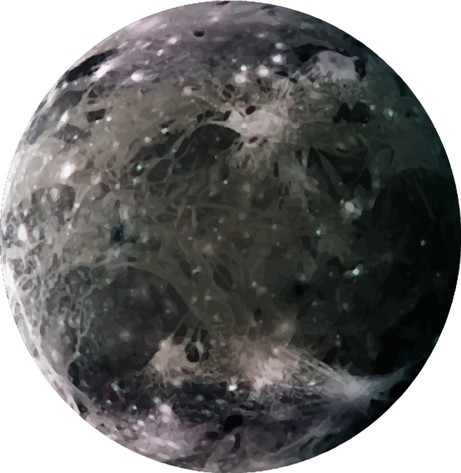

Ganimede
| Dati Principali | |
|---|---|
| Pianeta madre | Giove |
| Diametro | 5.268 km |
| Massa | 1,48 × 10²³ kg |
| Distanza da Giove | 1.070.000 km |
| Periodo orbitale | 7,15 giorni |
| Superficie | Miste di ghiaccio e roccia, con solchi e crateri |
| Atmosfera | Sottile, con ossigeno molecolare |


Struttura di Ganimede
Ganimede ha un nucleo ferroso, un mantello roccioso e una crosta ghiacciata. Potrebbe contenere un oceano sotterraneo tra strati di ghiaccio.
È l’unico satellite conosciuto a possedere un campo magnetico proprio, generato da un nucleo fluido.
Curiosità su Ganimede
- 🌐 È il satellite più grande del Sistema Solare, persino più grande di Mercurio.
- 🧲 Ha una magnetosfera indipendente da quella di Giove.
- 🔭 Scoperto da Galileo Galilei nel 1610.
- 🛰️ Sarà uno degli obiettivi principali della missione ESA *JUICE* (Jupiter Icy Moons Explorer).